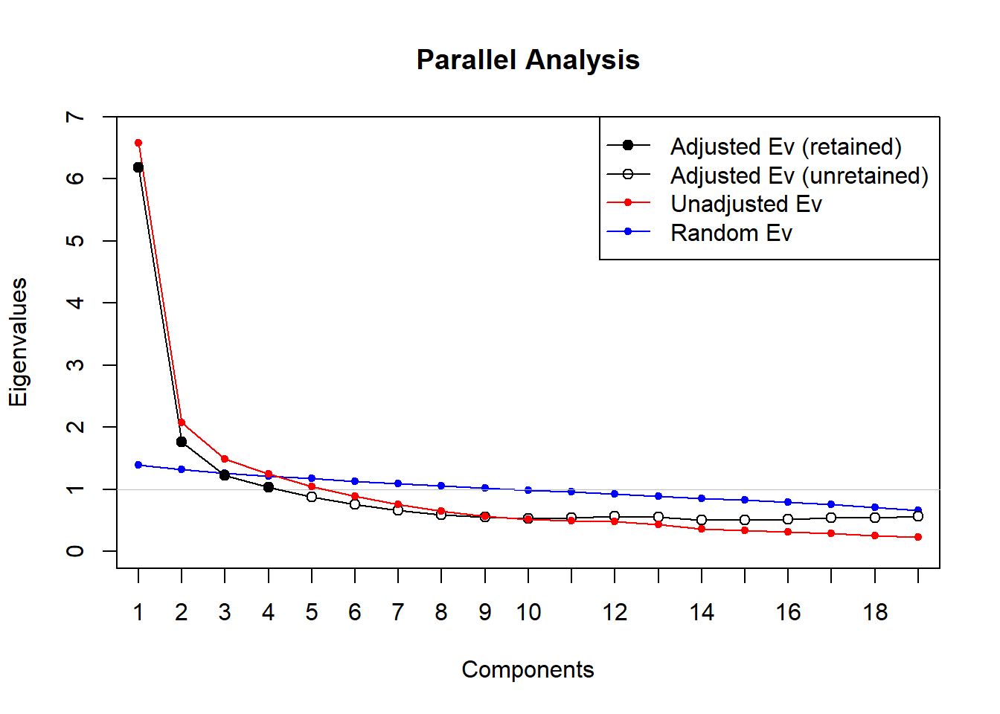

AQ and Schizotypy Factor Analysis FU1
These are the actual factor analyses we are most interested in.
library(dplyr)
library(psych)
library(paran)
library(lavaan)data = read.csv("complete scores winsorzied.csv")Replicating analyses from Chirica
data_chirica = data %>% dplyr::select(
starts_with("original_AQ"), starts_with("wss"), starts_with("spq")
)paran(data_chirica, cfa=FALSE, graph=TRUE,
color=TRUE, col=c("black", "red", "blue"))## Using eigendecomposition of correlation matrix.##
## Computing: 10% 20% 30% 40% 50% 60% 70% 80% 90% 100%##
## Results of Horn's Parallel Analysis for component retention
## 540 iterations, using the mean estimate
##
## ──────────────────────────────────────────────────
## Component Adjusted Unadjusted Estimated
## Eigenvalue Eigenvalue Bias
## ──────────────────────────────────────────────────
## 1 5.734411 6.110305 0.375894
## 2 1.731341 2.033188 0.301846
## 3 1.144039 1.390964 0.246925
## 4 1.026113 1.226148 0.200034
## ──────────────────────────────────────────────────
## Criterion: retain adjusted eigenvalues > 1.
## (4 components retained)Above suggests four factors, but we will run three factors with the original model using maximum likelihood.
mod_original = fa(data_chirica, nfactors = 3,fm = "ml")
write.csv(round(mod_original$communality,2), "Chirica Communality FU1.csv")
round(mod_original$PVAL,5)## [1] 0mod_original$dof## [1] 102mod_original$RMSEA## RMSEA lower upper confidence
## 0.09017465 0.08190808 0.09889302 0.90000000mod_original$chi## [1] 165.9794mod_original$TLI## [1] 0.82219471 - (1 - mod_original$TLI)* mod_original$dof / mod_original$null.dof## [1] 0.8814632Correlations for Chirica replication
aberrant_salience = data_chirica %>% dplyr::select(wss_magical_ideation_scores, spq_unusual_perception, spq_magical_thinking, spq_suspiciousness, spq_idea_of_reference, spq_odd_speech, original_AQ_social_discourse, wss_perceptual_aberration_score, original_AQ_pattern, spq_eccentric_behavior) %>% rowMeans(na.rm=T)
asociality = data_chirica %>% dplyr::select(original_AQ_social_anhedonia, spq_no_close_friends, spq_social_anxiety, spq_constricted_affect, wss_social_anhedonia_score) %>% rowMeans(na.rm=T)
non_divergent = data_chirica %>% dplyr::select(original_AQ_imagination, wss_physical_anhedonia_score, original_AQ_social_anhedonia)%>% rowMeans(na.rm=T)
cbind(aberrant_salience, asociality, non_divergent) %>% corr.test()## Call:corr.test(x = .)
## Correlation matrix
## aberrant_salience asociality non_divergent
## aberrant_salience 1.00 0.55 0.13
## asociality 0.55 1.00 0.56
## non_divergent 0.13 0.56 1.00
## Sample Size
## [1] 422
## Probability values (Entries above the diagonal are adjusted for multiple tests.)
## aberrant_salience asociality non_divergent
## aberrant_salience 0.00 0 0.01
## asociality 0.00 0 0.00
## non_divergent 0.01 0 0.00
##
## To see confidence intervals of the correlations, print with the short=FALSE optionNew FU1 data, but excluding disorganized schizotypy scores
data_excluding_disorganized = data %>% dplyr::select(starts_with("new_AQ"), starts_with("spq"), starts_with("wss"))paran(data_excluding_disorganized, cfa=FALSE, graph=TRUE,
color=TRUE, col=c("black", "red", "blue"))## Using eigendecomposition of correlation matrix.##
## Computing: 10% 20% 30% 40% 50% 60% 70% 80% 90% 100%##
## Results of Horn's Parallel Analysis for component retention
## 540 iterations, using the mean estimate
##
## ──────────────────────────────────────────────────
## Component Adjusted Unadjusted Estimated
## Eigenvalue Eigenvalue Bias
## ──────────────────────────────────────────────────
## 1 5.852773 6.229851 0.377077
## 2 1.766669 2.071048 0.304378
## 3 1.185314 1.434426 0.249111
## 4 1.012578 1.213039 0.200460
## ──────────────────────────────────────────────────
## Criterion: retain adjusted eigenvalues > 1.
## (4 components retained)Suggests 4 factors, but we will use 3 using Principal Access Factoring
data_excluding_disorganized_mod = fa(data_excluding_disorganized, nfactors = 3, fm = "pa")
data_excluding_disorganized_mod$PVAL## [1] 3.047154e-56data_excluding_disorganized_mod$dof## [1] 102data_excluding_disorganized_mod$RMSEA## RMSEA lower upper confidence
## 0.09781221 0.08963252 0.10645503 0.90000000data_excluding_disorganized_mod$chi## [1] 175.8581data_excluding_disorganized_mod$TLI## [1] 0.80048411 - (1 - data_excluding_disorganized_mod$TLI)* data_excluding_disorganized_mod$dof / data_excluding_disorganized_mod$null.dof## [1] 0.8669894write.csv(data_excluding_disorganized_mod$communality, "Excluding Disorganized Communality 3F PAF FU1.csv")3 factors EFA
data_excluding_disorganized_mod = fa(data_excluding_disorganized, nfactors = 3, fm = "ml")
data_excluding_disorganized_mod$PVAL## [1] 2.729312e-55data_excluding_disorganized_mod$dof## [1] 102data_excluding_disorganized_mod$RMSEA## RMSEA lower upper confidence
## 0.09716348 0.08897716 0.10581203 0.90000000data_excluding_disorganized_mod$chi## [1] 179.6845data_excluding_disorganized_mod$TLI## [1] 0.80312031 - (1 - data_excluding_disorganized_mod$TLI)* data_excluding_disorganized_mod$dof / data_excluding_disorganized_mod$null.dof## [1] 0.8687469write.csv(data_excluding_disorganized_mod$communality, "Excluding Disorganized Communality 3F EFA FU1.csv")Now looking at 4 factors as the Parallel Analysis suggested
data_excluding_disorganized_mod = fa(data_excluding_disorganized, nfactors = 4, fm = "pa")
data_excluding_disorganized_mod$PVAL## [1] 4.48628e-29data_excluding_disorganized_mod$dof## [1] 87data_excluding_disorganized_mod$RMSEA## RMSEA lower upper confidence
## 0.08037794 0.07126422 0.08995389 0.90000000data_excluding_disorganized_mod$chi## [1] 89.4809data_excluding_disorganized_mod$TLI## [1] 0.86500251 - (1 - data_excluding_disorganized_mod$TLI)* data_excluding_disorganized_mod$dof / data_excluding_disorganized_mod$null.dof## [1] 0.9232367write.csv(data_excluding_disorganized_mod$communality, "Excluding Disorganized Communality 4F PAF FU1.csv")Adding MSS Disorganized Schizotypy
new_data = data %>% dplyr::select(
starts_with("new_AQ"),
starts_with("wss"),
starts_with("spq"),
MSS)paran(new_data, cfa=FALSE, graph=TRUE,
color=TRUE, col=c("black", "red", "blue"))## Using eigendecomposition of correlation matrix.##
## Computing: 10% 20% 30% 40% 50% 60% 70% 80% 90% 100%##
## Results of Horn's Parallel Analysis for component retention
## 570 iterations, using the mean estimate
##
## ──────────────────────────────────────────────────
## Component Adjusted Unadjusted Estimated
## Eigenvalue Eigenvalue Bias
## ──────────────────────────────────────────────────
## 1 6.184500 6.574752 0.390251
## 2 1.757409 2.074701 0.317291
## 3 1.224150 1.483122 0.258972
## 4 1.038217 1.251657 0.213439
## ──────────────────────────────────────────────────
## Criterion: retain adjusted eigenvalues > 1.
## (4 components retained)
Suggests four factors, but we will start with running 3 factors
new_data_mod = fa(new_data, nfactors = 3, fm = "pa")
new_data_mod$PVAL## [1] 4.972498e-57new_data_mod$dof## [1] 117new_data_mod$RMSEA## RMSEA lower upper confidence
## 0.09345773 0.08577996 0.10156997 0.90000000new_data_mod$chi## [1] 192.4253new_data_mod$TLI## [1] 0.80827441 - (1 - new_data_mod$TLI)* new_data_mod$dof / new_data_mod$null.dof## [1] 0.8688193write.csv(new_data_mod$communality, "New Communality 3F PAF FU1.csv")new_data_mod = fa(new_data, nfactors = 3, fm = "ml")
new_data_mod$PVAL## [1] 4.103665e-56new_data_mod$dof## [1] 117new_data_mod$RMSEA## RMSEA lower upper confidence
## 0.09287717 0.08519306 0.10099487 0.90000000new_data_mod$chi## [1] 196.6246new_data_mod$TLI## [1] 0.81064741 - (1 - new_data_mod$TLI)* new_data_mod$dof / new_data_mod$null.dof## [1] 0.870443write.csv(new_data_mod$communality, "New Communality 3F EFA FU1.csv")new_data_mod = fa(new_data, nfactors = 4, fm = "pa")
new_data_mod$PVAL## [1] 5.400699e-28new_data_mod$dof## [1] 101new_data_mod$RMSEA## RMSEA lower upper confidence
## 0.07520941 0.06665054 0.08418816 0.90000000new_data_mod$chi## [1] 96.31671new_data_mod$TLI## [1] 0.87558111 - (1 - new_data_mod$TLI)* new_data_mod$dof / new_data_mod$null.dof## [1] 0.9265128write.csv(new_data_mod$communality, "New Communality 4F PAF FU1.csv")Original Chirica CFA
cfa_original = "
aberrant_salience =~ wss_magical_ideation_scores + spq_unusual_perception + spq_magical_thinking + spq_suspiciousness + spq_idea_of_reference + spq_odd_speech + original_AQ_social_discourse + wss_perceptual_aberration_score + original_AQ_pattern + spq_eccentric_behavior
Asociality =~ original_AQ_social_anhedonia + spq_no_close_friends + spq_social_anxiety + spq_constricted_affect + wss_social_anhedonia_score
non_divergent_thinking =~ original_AQ_imagination + wss_physical_anhedonia_score + original_AQ_social_cognition
"
mod_replication = cfa(cfa_original, data)
summary(mod_replication,fit.measures=T,standardized=TRUE)## lavaan 0.7-3 ended normally after 85 iterations
##
## Estimator ML
## Optimization method NLMINB
## Number of model parameters 39
##
## Number of observations 422
##
## Model Test User Model:
##
## Test statistic 833.883
## Degrees of freedom 132
## P-value (Chi-square) 0.000
##
## Browne's residual (NT model-based) test
## Test statistic 918.487
## Degrees of freedom 132
## P-value (Chi-square) 0.000
##
## Model Test Baseline Model:
##
## Test statistic 3181.949
## Degrees of freedom 153
## P-value 0.000
##
## User Model versus Baseline Model:
##
## Comparative Fit Index (CFI) 0.768
## Tucker-Lewis Index (TLI) 0.731
##
## Loglikelihood and Information Criteria:
##
## Loglikelihood user model (H0) -5398.827
## Loglikelihood unrestricted model (H1) -4981.886
##
## Akaike (AIC) 10875.654
## Bayesian (BIC) 11033.410
## Sample-size adjusted Bayesian (SABIC) 10909.650
##
## Root Mean Square Error of Approximation:
##
## RMSEA 0.112
## 90 Percent confidence interval - lower 0.105
## 90 Percent confidence interval - upper 0.120
## P-value H_0: RMSEA <= 0.050 0.000
## P-value H_0: RMSEA >= 0.080 1.000
##
## Standardized Root Mean Square Residual:
##
## SRMR 0.084
##
## Goodness of Fit Index:
##
## Goodness of Fit Index (GFI) 0.828
## 90 Percent confidence interval - lower 0.811
## 90 Percent confidence interval - upper 0.845
##
## Parameter Estimates:
##
## Standard errors Standard
## Information Expected
## Information saturated (h1) model Structured
##
## Latent Variables:
## Estimate Std.Err z-value P(>|z|) Std.lv
## aberrant_salience =~
## wss_mgcl_dtn_s 1.000 0.134
## spq_nsl_prcptn 4.875 0.328 14.864 0.000 0.652
## spq_mgcl_thnkn 2.814 0.268 10.508 0.000 0.376
## spq_suspicsnss 5.162 0.372 13.885 0.000 0.690
## spq_id_f_rfrnc 5.618 0.397 14.155 0.000 0.751
## spq_odd_speech 4.226 0.377 11.203 0.000 0.565
## orgnl_AQ_scl_d 2.835 0.304 9.332 0.000 0.379
## wss_prcptl_br_ 0.781 0.062 12.609 0.000 0.104
## orgnl_AQ_pttrn 2.012 0.268 7.510 0.000 0.269
## spq_ccntrc_bhv 5.078 0.374 13.574 0.000 0.679
## Asociality =~
## orgnl_AQ_scl_n 1.000 0.444
## spq_n_cls_frnd 1.951 0.155 12.571 0.000 0.866
## spq_socil_nxty 1.326 0.133 9.969 0.000 0.589
## spq_cnstrctd_f 1.384 0.119 11.586 0.000 0.614
## wss_scl_nhdn_s 0.264 0.023 11.292 0.000 0.117
## non_divergent_thinking =~
## orgnl_AQ_mgntn 1.000 0.215
## wss_physcl_nh_ 0.165 0.046 3.615 0.000 0.035
## orgnl_AQ_scl_c 2.115 0.531 3.980 0.000 0.454
## Std.all
##
## 0.715
## 0.772
## 0.543
## 0.720
## 0.734
## 0.579
## 0.482
## 0.652
## 0.387
## 0.703
##
## 0.614
## 0.829
## 0.589
## 0.722
## 0.696
##
## 0.337
## 0.293
## 0.711
##
## Covariances:
## Estimate Std.Err z-value P(>|z|) Std.lv Std.all
## aberrant_salience ~~
## Asociality 0.037 0.005 7.667 0.000 0.625 0.625
## nn_dvrgnt_thnk 0.010 0.003 3.279 0.001 0.342 0.342
## Asociality ~~
## nn_dvrgnt_thnk 0.049 0.013 3.708 0.000 0.517 0.517
##
## Variances:
## Estimate Std.Err z-value P(>|z|) Std.lv Std.all
## .wss_mgcl_dtn_s 0.017 0.001 12.701 0.000 0.017 0.489
## .spq_nsl_prcptn 0.287 0.024 11.936 0.000 0.287 0.403
## .spq_mgcl_thnkn 0.339 0.025 13.800 0.000 0.339 0.705
## .spq_suspicsnss 0.443 0.035 12.647 0.000 0.443 0.482
## .spq_id_f_rfrnc 0.483 0.039 12.481 0.000 0.483 0.461
## .spq_odd_speech 0.634 0.046 13.649 0.000 0.634 0.665
## .orgnl_AQ_scl_d 0.476 0.034 14.001 0.000 0.476 0.768
## .wss_prcptl_br_ 0.015 0.001 13.234 0.000 0.015 0.574
## .orgnl_AQ_pttrn 0.410 0.029 14.220 0.000 0.410 0.850
## .spq_ccntrc_bhv 0.471 0.037 12.817 0.000 0.471 0.505
## .orgnl_AQ_scl_n 0.326 0.025 13.044 0.000 0.326 0.623
## .spq_n_cls_frnd 0.341 0.038 9.084 0.000 0.341 0.312
## .spq_socil_nxty 0.652 0.049 13.228 0.000 0.652 0.653
## .spq_cnstrctd_f 0.346 0.029 11.810 0.000 0.346 0.478
## .wss_scl_nhdn_s 0.015 0.001 12.199 0.000 0.015 0.516
## .orgnl_AQ_mgntn 0.359 0.027 13.075 0.000 0.359 0.886
## .wss_physcl_nh_ 0.013 0.001 13.511 0.000 0.013 0.914
## .orgnl_AQ_scl_c 0.202 0.048 4.215 0.000 0.202 0.494
## aberrant_salnc 0.018 0.002 8.123 0.000 1.000 1.000
## Asociality 0.197 0.030 6.525 0.000 1.000 1.000
## nn_dvrgnt_thnk 0.046 0.018 2.616 0.009 1.000 1.000mod_replication## lavaan 0.7-3 ended normally after 85 iterations
##
## Estimator ML
## Optimization method NLMINB
## Number of model parameters 39
##
## Number of observations 422
##
## Model Test User Model:
##
## Test statistic 833.883
## Degrees of freedom 132
## P-value (Chi-square) 0.000
##
## Browne's residual (NT model-based) test
## Test statistic 918.487
## Degrees of freedom 132
## P-value (Chi-square) 0.000CFA Excluding MSS Disorganized
cfa_excluding_mss = "
aberrant_salience =~ wss_magical_ideation_scores + spq_unusual_perception + spq_magical_thinking + spq_suspiciousness + spq_idea_of_reference + spq_odd_speech + new_AQ_social_discourse + wss_perceptual_aberration_score + new_AQ_pattern + spq_eccentric_behavior
Asociality =~ new_AQ_social_anhedonia + spq_no_close_friends + spq_social_anxiety + spq_constricted_affect + wss_social_anhedonia_score
non_divergent_thinking =~ new_AQ_imagination + wss_physical_anhedonia_score + new_AQ_social_cogition
"
mod_excluding_MSS = cfa(cfa_excluding_mss, data)
summary(mod_excluding_MSS,fit.measures=T,standardized=TRUE)## lavaan 0.7-3 ended normally after 101 iterations
##
## Estimator ML
## Optimization method NLMINB
## Number of model parameters 39
##
## Number of observations 422
##
## Model Test User Model:
##
## Test statistic 931.402
## Degrees of freedom 132
## P-value (Chi-square) 0.000
##
## Browne's residual (NT model-based) test
## Test statistic 1040.620
## Degrees of freedom 132
## P-value (Chi-square) 0.000
##
## Model Test Baseline Model:
##
## Test statistic 3328.463
## Degrees of freedom 153
## P-value 0.000
##
## User Model versus Baseline Model:
##
## Comparative Fit Index (CFI) 0.748
## Tucker-Lewis Index (TLI) 0.708
##
## Loglikelihood and Information Criteria:
##
## Loglikelihood user model (H0) -5274.871
## Loglikelihood unrestricted model (H1) -4809.170
##
## Akaike (AIC) 10627.742
## Bayesian (BIC) 10785.497
## Sample-size adjusted Bayesian (SABIC) 10661.738
##
## Root Mean Square Error of Approximation:
##
## RMSEA 0.120
## 90 Percent confidence interval - lower 0.113
## 90 Percent confidence interval - upper 0.127
## P-value H_0: RMSEA <= 0.050 0.000
## P-value H_0: RMSEA >= 0.080 1.000
##
## Standardized Root Mean Square Residual:
##
## SRMR 0.091
##
## Goodness of Fit Index:
##
## Goodness of Fit Index (GFI) 0.807
## 90 Percent confidence interval - lower 0.789
## 90 Percent confidence interval - upper 0.824
##
## Parameter Estimates:
##
## Standard errors Standard
## Information Expected
## Information saturated (h1) model Structured
##
## Latent Variables:
## Estimate Std.Err z-value P(>|z|) Std.lv
## aberrant_salience =~
## wss_mgcl_dtn_s 1.000 0.132
## spq_nsl_prcptn 4.924 0.338 14.574 0.000 0.649
## spq_mgcl_thnkn 2.775 0.274 10.145 0.000 0.366
## spq_suspicsnss 5.229 0.382 13.677 0.000 0.689
## spq_id_f_rfrnc 5.683 0.408 13.915 0.000 0.749
## spq_odd_speech 4.383 0.386 11.344 0.000 0.578
## nw_AQ_scl_dscr 2.887 0.275 10.493 0.000 0.380
## wss_prcptl_br_ 0.786 0.064 12.361 0.000 0.103
## new_AQ_pattern 2.132 0.273 7.823 0.000 0.281
## spq_ccntrc_bhv 5.252 0.385 13.645 0.000 0.692
## Asociality =~
## nw_AQ_scl_nhdn 1.000 0.448
## spq_n_cls_frnd 1.923 0.152 12.639 0.000 0.860
## spq_socil_nxty 1.330 0.132 10.110 0.000 0.595
## spq_cnstrctd_f 1.370 0.118 11.654 0.000 0.613
## wss_scl_nhdn_s 0.262 0.023 11.371 0.000 0.117
## non_divergent_thinking =~
## new_AQ_imagntn 1.000 0.179
## wss_physcl_nh_ 0.177 0.049 3.579 0.000 0.032
## nw_AQ_scl_cgtn 2.809 0.773 3.636 0.000 0.504
## Std.all
##
## 0.704
## 0.769
## 0.528
## 0.719
## 0.732
## 0.592
## 0.546
## 0.646
## 0.405
## 0.717
##
## 0.619
## 0.824
## 0.596
## 0.721
## 0.696
##
## 0.299
## 0.263
## 0.833
##
## Covariances:
## Estimate Std.Err z-value P(>|z|) Std.lv Std.all
## aberrant_salience ~~
## Asociality 0.037 0.005 7.714 0.000 0.634 0.634
## nn_dvrgnt_thnk 0.008 0.003 3.129 0.002 0.354 0.354
## Asociality ~~
## nn_dvrgnt_thnk 0.040 0.012 3.334 0.001 0.496 0.496
##
## Variances:
## Estimate Std.Err z-value P(>|z|) Std.lv Std.all
## .wss_mgcl_dtn_s 0.018 0.001 12.830 0.000 0.018 0.504
## .spq_nsl_prcptn 0.291 0.024 12.030 0.000 0.291 0.409
## .spq_mgcl_thnkn 0.347 0.025 13.864 0.000 0.347 0.722
## .spq_suspicsnss 0.445 0.035 12.686 0.000 0.445 0.484
## .spq_id_f_rfrnc 0.486 0.039 12.538 0.000 0.486 0.465
## .spq_odd_speech 0.619 0.046 13.601 0.000 0.619 0.650
## .nw_AQ_scl_dscr 0.341 0.025 13.797 0.000 0.341 0.702
## .wss_prcptl_br_ 0.015 0.001 13.291 0.000 0.015 0.582
## .new_AQ_pattern 0.402 0.028 14.190 0.000 0.402 0.836
## .spq_ccntrc_bhv 0.453 0.036 12.705 0.000 0.453 0.486
## .nw_AQ_scl_nhdn 0.322 0.025 13.003 0.000 0.322 0.617
## .spq_n_cls_frnd 0.351 0.038 9.300 0.000 0.351 0.322
## .spq_socil_nxty 0.644 0.049 13.179 0.000 0.644 0.645
## .spq_cnstrctd_f 0.348 0.029 11.832 0.000 0.348 0.480
## .wss_scl_nhdn_s 0.015 0.001 12.196 0.000 0.015 0.515
## .new_AQ_imagntn 0.329 0.024 13.625 0.000 0.329 0.911
## .wss_physcl_nh_ 0.014 0.001 13.908 0.000 0.014 0.931
## .nw_AQ_scl_cgtn 0.112 0.059 1.894 0.058 0.112 0.307
## aberrant_salnc 0.017 0.002 7.968 0.000 1.000 1.000
## Asociality 0.200 0.030 6.588 0.000 1.000 1.000
## nn_dvrgnt_thnk 0.032 0.013 2.433 0.015 1.000 1.000Correlations with SeSS and ASI
correlation_syntax = "
aberrant_salience_positive =~ wss_magical_ideation_scores + spq_unusual_perception + spq_magical_thinking + spq_suspiciousness + spq_idea_of_reference + wss_perceptual_aberration_score + new_AQ_pattern
asociality =~ new_AQ_social_anhedonia + spq_no_close_friends+ spq_constricted_affect + wss_social_anhedonia_score + new_AQ_imagination + new_AQ_social_cogition + wss_physical_anhedonia_score
aberrant_salience_disorganized =~ new_AQ_social_discourse + spq_eccentric_behavior + spq_odd_speech + MSS + spq_social_anxiety
aberrant_salience_positive~~asociality
aberrant_salience_positive ~~aberrant_salience_disorganized
SeSS ~~ aberrant_salience_positive
SeSS ~~ asociality
SeSS ~~ aberrant_salience_disorganized
ASI_score ~~ aberrant_salience_positive
ASI_score ~~ asociality
ASI_score ~~ aberrant_salience_disorganized
SeSS ~~ ASI_score
"
correlation_mod = sem(correlation_syntax, data)
summary(correlation_mod,fit.measures=T,standardized=TRUE)## lavaan 0.7-3 ended normally after 132 iterations
##
## Estimator ML
## Optimization method NLMINB
## Number of model parameters 50
##
## Number of observations 422
##
## Model Test User Model:
##
## Test statistic 980.730
## Degrees of freedom 181
## P-value (Chi-square) 0.000
##
## Browne's residual (NT model-based) test
## Test statistic 1073.412
## Degrees of freedom 181
## P-value (Chi-square) 0.000
##
## Model Test Baseline Model:
##
## Test statistic 3959.759
## Degrees of freedom 210
## P-value 0.000
##
## User Model versus Baseline Model:
##
## Comparative Fit Index (CFI) 0.787
## Tucker-Lewis Index (TLI) 0.753
##
## Loglikelihood and Information Criteria:
##
## Loglikelihood user model (H0) -5437.663
## Loglikelihood unrestricted model (H1) -4947.298
##
## Akaike (AIC) 10975.326
## Bayesian (BIC) 11177.577
## Sample-size adjusted Bayesian (SABIC) 11018.910
##
## Root Mean Square Error of Approximation:
##
## RMSEA 0.102
## 90 Percent confidence interval - lower 0.096
## 90 Percent confidence interval - upper 0.109
## P-value H_0: RMSEA <= 0.050 0.000
## P-value H_0: RMSEA >= 0.080 1.000
##
## Standardized Root Mean Square Residual:
##
## SRMR 0.083
##
## Goodness of Fit Index:
##
## Goodness of Fit Index (GFI) 0.832
## 90 Percent confidence interval - lower 0.816
## 90 Percent confidence interval - upper 0.848
##
## Parameter Estimates:
##
## Standard errors Standard
## Information Expected
## Information saturated (h1) model Structured
##
## Latent Variables:
## Estimate Std.Err z-value P(>|z|)
## aberrant_salience_positive =~
## wss_mgcl_dtn_s 1.000
## spq_nsl_prcptn 4.664 0.297 15.685 0.000
## spq_mgcl_thnkn 2.847 0.249 11.454 0.000
## spq_suspicsnss 4.917 0.339 14.491 0.000
## spq_id_f_rfrnc 5.282 0.362 14.594 0.000
## wss_prcptl_br_ 0.773 0.057 13.593 0.000
## new_AQ_pattern 2.042 0.252 8.111 0.000
## asociality =~
## nw_AQ_scl_nhdn 1.000
## spq_n_cls_frnd 1.840 0.146 12.635 0.000
## spq_cnstrctd_f 1.288 0.113 11.439 0.000
## wss_scl_nhdn_s 0.273 0.023 12.009 0.000
## new_AQ_imagntn 0.168 0.070 2.412 0.016
## nw_AQ_scl_cgtn 0.588 0.074 7.922 0.000
## wss_physcl_nh_ 0.073 0.014 5.121 0.000
## aberrant_salience_disorganized =~
## nw_AQ_scl_dscr 1.000
## spq_ccntrc_bhv 1.554 0.109 14.273 0.000
## spq_odd_speech 1.473 0.109 13.510 0.000
## MSS 0.368 0.030 12.070 0.000
## spq_socil_nxty 1.228 0.110 11.180 0.000
## Std.lv Std.all
##
## 0.140 0.751
## 0.655 0.776
## 0.400 0.577
## 0.691 0.720
## 0.742 0.725
## 0.109 0.678
## 0.287 0.414
##
## 0.457 0.632
## 0.840 0.804
## 0.588 0.692
## 0.125 0.740
## 0.077 0.128
## 0.268 0.443
## 0.033 0.277
##
## 0.488 0.700
## 0.758 0.785
## 0.719 0.736
## 0.179 0.651
## 0.599 0.600
##
## Covariances:
## Estimate Std.Err z-value P(>|z|)
## aberrant_salience_positive ~~
## asociality 0.036 0.005 7.364 0.000
## abrrnt_slnc_ds 0.050 0.006 8.851 0.000
## SeSS 0.039 0.005 7.752 0.000
## asociality ~~
## SeSS 0.120 0.017 6.921 0.000
## aberrant_salience_disorganized ~~
## SeSS 0.165 0.019 8.576 0.000
## aberrant_salience_positive ~~
## ASI_score 0.018 0.002 8.085 0.000
## asociality ~~
## ASI_score 0.012 0.006 1.933 0.053
## aberrant_salience_disorganized ~~
## ASI_score 0.046 0.007 6.336 0.000
## SeSS ~~
## ASI_score 0.046 0.008 6.012 0.000
## asociality ~~
## abrrnt_slnc_ds 0.136 0.018 7.497 0.000
## Std.lv Std.all
##
## 0.560 0.560
## 0.726 0.726
## 0.279 0.467
##
## 0.263 0.441
##
## 0.339 0.568
##
## 0.125 0.494
##
## 0.026 0.104
##
## 0.095 0.376
##
## 0.046 0.306
##
## 0.611 0.611
##
## Variances:
## Estimate Std.Err z-value P(>|z|) Std.lv Std.all
## .wss_mgcl_dtn_s 0.015 0.001 12.119 0.000 0.015 0.437
## .spq_nsl_prcptn 0.283 0.024 11.696 0.000 0.283 0.398
## .spq_mgcl_thnkn 0.321 0.024 13.605 0.000 0.321 0.667
## .spq_suspicsnss 0.443 0.035 12.521 0.000 0.443 0.481
## .spq_id_f_rfrnc 0.497 0.040 12.464 0.000 0.497 0.474
## .wss_prcptl_br_ 0.014 0.001 12.946 0.000 0.014 0.540
## .new_AQ_pattern 0.399 0.028 14.146 0.000 0.399 0.829
## .nw_AQ_scl_nhdn 0.314 0.025 12.798 0.000 0.314 0.601
## .spq_n_cls_frnd 0.386 0.040 9.703 0.000 0.386 0.353
## .spq_cnstrctd_f 0.378 0.031 12.121 0.000 0.378 0.522
## .wss_scl_nhdn_s 0.013 0.001 11.315 0.000 0.013 0.452
## .new_AQ_imagntn 0.355 0.024 14.483 0.000 0.355 0.984
## .nw_AQ_scl_cgtn 0.294 0.021 13.897 0.000 0.294 0.803
## .wss_physcl_nh_ 0.013 0.001 14.314 0.000 0.013 0.923
## .nw_AQ_scl_dscr 0.247 0.020 12.339 0.000 0.247 0.509
## .spq_ccntrc_bhv 0.357 0.033 10.842 0.000 0.357 0.383
## .spq_odd_speech 0.436 0.037 11.825 0.000 0.436 0.458
## .MSS 0.044 0.003 12.866 0.000 0.044 0.577
## .spq_socil_nxty 0.640 0.048 13.262 0.000 0.640 0.641
## SeSS 0.356 0.025 14.526 0.000 0.356 1.000
## ASI_score 0.064 0.004 14.526 0.000 0.064 1.000
## abrrnt_slnc_ps 0.020 0.002 8.663 0.000 1.000 1.000
## asociality 0.209 0.031 6.724 0.000 1.000 1.000
## abrrnt_slnc_ds 0.238 0.031 7.772 0.000 1.000 1.000correlation replication
correlation_syntax = "
aberrant_salience =~ wss_magical_ideation_scores + spq_unusual_perception + spq_magical_thinking + spq_suspiciousness + spq_idea_of_reference + wss_perceptual_aberration_score + new_AQ_pattern+ spq_eccentric_behavior + spq_odd_speech + new_AQ_social_discourse
asociality =~ new_AQ_social_anhedonia + spq_no_close_friends+ spq_social_anxiety+spq_constricted_affect+wss_social_anhedonia_score
disorganized =~ new_AQ_imagination + new_AQ_social_cogition + wss_physical_anhedonia_score + MSS
aberrant_salience~~asociality
aberrant_salience ~~disorganized
SeSS ~~ aberrant_salience
SeSS ~~ asociality
SeSS ~~ disorganized
ASI_score ~~ aberrant_salience
ASI_score ~~ asociality
ASI_score ~~ disorganized
SeSS ~~ ASI_score
"
correlation_mod = sem(correlation_syntax, data)
summary(correlation_mod,fit.measures=T,standardized=TRUE)## lavaan 0.7-3 ended normally after 154 iterations
##
## Estimator ML
## Optimization method NLMINB
## Number of model parameters 50
##
## Number of observations 422
##
## Model Test User Model:
##
## Test statistic 1163.317
## Degrees of freedom 181
## P-value (Chi-square) 0.000
##
## Browne's residual (NT model-based) test
## Test statistic 1321.741
## Degrees of freedom 181
## P-value (Chi-square) 0.000
##
## Model Test Baseline Model:
##
## Test statistic 3959.759
## Degrees of freedom 210
## P-value 0.000
##
## User Model versus Baseline Model:
##
## Comparative Fit Index (CFI) 0.738
## Tucker-Lewis Index (TLI) 0.696
##
## Loglikelihood and Information Criteria:
##
## Loglikelihood user model (H0) -5528.957
## Loglikelihood unrestricted model (H1) -4947.298
##
## Akaike (AIC) 11157.914
## Bayesian (BIC) 11360.164
## Sample-size adjusted Bayesian (SABIC) 11201.498
##
## Root Mean Square Error of Approximation:
##
## RMSEA 0.113
## 90 Percent confidence interval - lower 0.107
## 90 Percent confidence interval - upper 0.120
## P-value H_0: RMSEA <= 0.050 0.000
## P-value H_0: RMSEA >= 0.080 1.000
##
## Standardized Root Mean Square Residual:
##
## SRMR 0.091
##
## Goodness of Fit Index:
##
## Goodness of Fit Index (GFI) 0.795
## 90 Percent confidence interval - lower 0.779
## 90 Percent confidence interval - upper 0.812
##
## Parameter Estimates:
##
## Standard errors Standard
## Information Expected
## Information saturated (h1) model Structured
##
## Latent Variables:
## Estimate Std.Err z-value P(>|z|) Std.lv Std.all
## aberrant_salience =~
## wss_mgcl_dtn_s 1.000 0.129 0.688
## spq_nsl_prcptn 4.924 0.351 14.026 0.000 0.634 0.751
## spq_mgcl_thnkn 2.745 0.281 9.755 0.000 0.353 0.510
## spq_suspicsnss 5.359 0.397 13.486 0.000 0.690 0.719
## spq_id_f_rfrnc 5.789 0.424 13.637 0.000 0.745 0.728
## wss_prcptl_br_ 0.794 0.066 12.079 0.000 0.102 0.638
## new_AQ_pattern 2.289 0.280 8.179 0.000 0.295 0.425
## spq_ccntrc_bhv 5.445 0.400 13.599 0.000 0.701 0.726
## spq_odd_speech 4.670 0.400 11.674 0.000 0.601 0.616
## nw_AQ_scl_dscr 3.107 0.284 10.923 0.000 0.400 0.574
## asociality =~
## nw_AQ_scl_nhdn 1.000 0.449 0.621
## spq_n_cls_frnd 1.900 0.150 12.648 0.000 0.853 0.816
## spq_socil_nxty 1.334 0.131 10.189 0.000 0.599 0.599
## spq_cnstrctd_f 1.354 0.116 11.626 0.000 0.608 0.714
## wss_scl_nhdn_s 0.265 0.023 11.547 0.000 0.119 0.707
## disorganized =~
## new_AQ_imagntn 1.000 0.070 0.117
## nw_AQ_scl_cgtn 4.634 2.213 2.095 0.036 0.327 0.540
## wss_physcl_nh_ 0.512 0.257 1.994 0.046 0.036 0.299
## MSS 2.387 1.134 2.104 0.035 0.168 0.610
##
## Covariances:
## Estimate Std.Err z-value P(>|z|) Std.lv Std.all
## aberrant_salience ~~
## asociality 0.037 0.005 7.699 0.000 0.638 0.638
## disorganized 0.007 0.003 2.075 0.038 0.724 0.724
## SeSS 0.041 0.005 8.283 0.000 0.315 0.529
## asociality ~~
## SeSS 0.119 0.017 6.944 0.000 0.265 0.444
## disorganized ~~
## SeSS 0.025 0.012 2.074 0.038 0.355 0.595
## aberrant_salience ~~
## ASI_score 0.016 0.002 7.969 0.000 0.126 0.499
## asociality ~~
## ASI_score 0.017 0.006 2.822 0.005 0.039 0.154
## disorganized ~~
## ASI_score 0.002 0.001 1.285 0.199 0.027 0.108
## SeSS ~~
## ASI_score 0.046 0.008 6.012 0.000 0.046 0.306
## asociality ~~
## disorganized 0.023 0.011 2.069 0.039 0.738 0.738
##
## Variances:
## Estimate Std.Err z-value P(>|z|) Std.lv Std.all
## .wss_mgcl_dtn_s 0.018 0.001 13.133 0.000 0.018 0.527
## .spq_nsl_prcptn 0.311 0.025 12.516 0.000 0.311 0.436
## .spq_mgcl_thnkn 0.356 0.025 13.984 0.000 0.356 0.740
## .spq_suspicsnss 0.444 0.035 12.863 0.000 0.444 0.483
## .spq_id_f_rfrnc 0.492 0.039 12.775 0.000 0.492 0.470
## .wss_prcptl_br_ 0.015 0.001 13.461 0.000 0.015 0.592
## .new_AQ_pattern 0.394 0.028 14.186 0.000 0.394 0.820
## .spq_ccntrc_bhv 0.441 0.034 12.797 0.000 0.441 0.473
## .spq_odd_speech 0.592 0.044 13.581 0.000 0.592 0.621
## .nw_AQ_scl_dscr 0.325 0.024 13.767 0.000 0.325 0.671
## .nw_AQ_scl_nhdn 0.321 0.025 12.999 0.000 0.321 0.614
## .spq_n_cls_frnd 0.364 0.038 9.612 0.000 0.364 0.334
## .spq_socil_nxty 0.640 0.049 13.165 0.000 0.640 0.641
## .spq_cnstrctd_f 0.355 0.030 11.962 0.000 0.355 0.490
## .wss_scl_nhdn_s 0.014 0.001 12.063 0.000 0.014 0.500
## .new_AQ_imagntn 0.356 0.025 14.466 0.000 0.356 0.986
## .nw_AQ_scl_cgtn 0.260 0.021 12.183 0.000 0.260 0.709
## .wss_physcl_nh_ 0.013 0.001 14.075 0.000 0.013 0.911
## .MSS 0.048 0.004 10.751 0.000 0.048 0.628
## SeSS 0.356 0.025 14.526 0.000 0.356 1.000
## ASI_score 0.064 0.004 14.526 0.000 0.064 1.000
## aberrant_salnc 0.017 0.002 7.761 0.000 1.000 1.000
## asociality 0.202 0.030 6.619 0.000 1.000 1.000
## disorganized 0.005 0.005 1.062 0.288 1.000 1.000